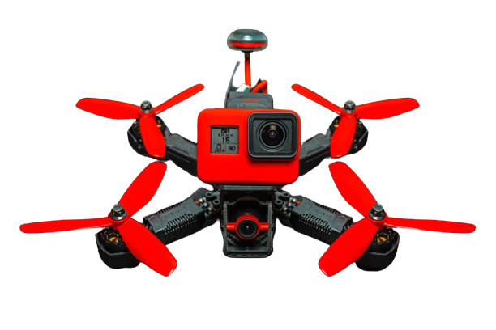
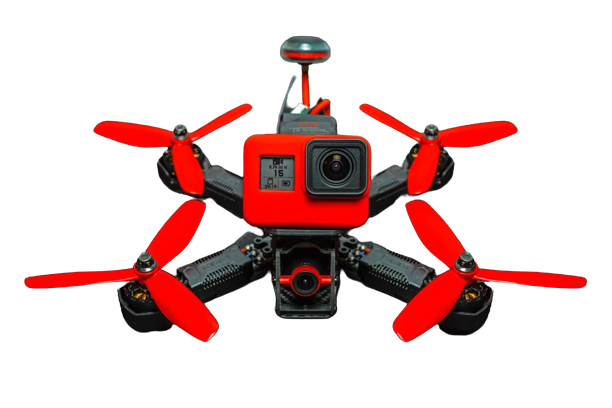

Racing Drönare
Dem mest avancerade drönarna man kan skaffa
Racing drönare är något som bara passar folk som har erfarenhet av redan avancerade drönare sen förr. Racing drönare är extremt svåra att hantera eftersom dem är alla i manual läge. Manual läge innebär att du har full kotnroll över din drönare utan undantag. Det betyder att det inte finns några säkerhets funktioner som Obstacle Avoidance (DJI Ekslusivt), Hover funktioner eller Automatisk Stabilisation. Till exempel, ifall du lutar din drönare för att åka fram och sen släpper stickan så kommer den inte automatiskt luta sig upp utan kommer istället fortsätta på sättet ksom du lutade den på innan.
 
